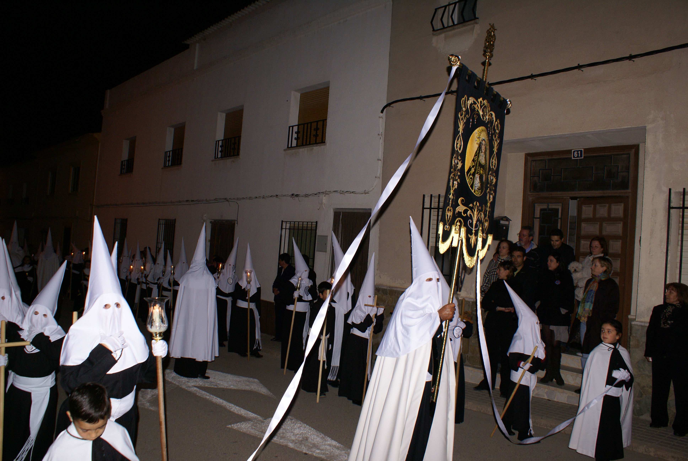

La Hermandad de Nuestra Señora de la Soledad fue fundada el Viernes Santo del año 1954 por un total de 18 Hermanos, entre los que
figuraba Don Ulpiano Cano Garvi primero por orden de Inscripción y además ideólogo.
En la actualidad la hermandad está formada por 650 hermanos y presidida por Doña Victoria Sánchez Lillo.
Cabe destacar la elevada participación de los hermanos en todos los actos, especialmente en las procesiones de Viernes de Dolores,
Jueves Santo y Viernes Santo.
Su uniformidad consiste en túnica de tela negra, un fajín blanco colocado a media altura rodeando la parte central del abdomen y un
capucho blanco el cual se coloca encima de una capucho el cual está hecho de catón o de rejilla, y un escudo con el corazón y las siete
espadas que simbolizan los siete dolores de la Virgen de la Soledad (los caules están explicados más abajo) en el centro del capúz y una tulipa.
